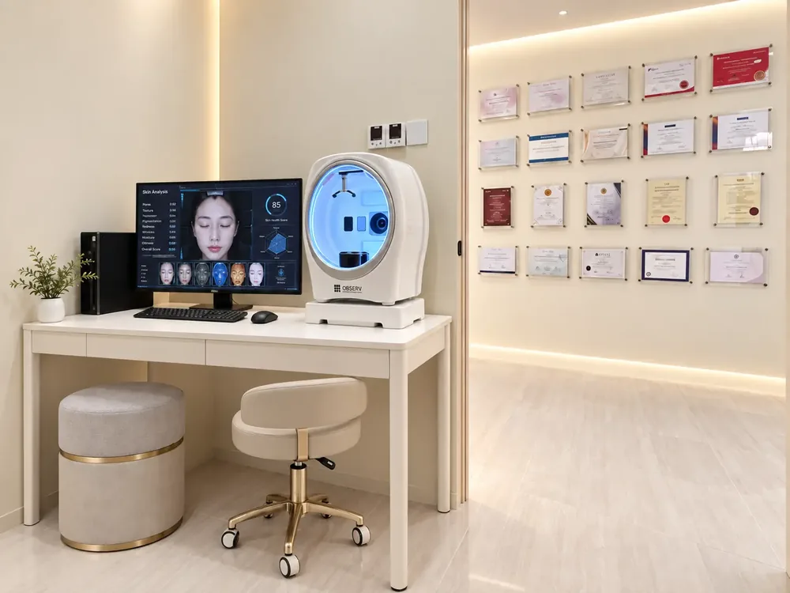

Our clinics
Aesthetic clinic in Cheras, Kuala Lumpur
At 104 Jalan Cerdas, Taman Connaught, Cheras. Led by Dr. Joycelyn Loh, with over a decade in aesthetic medicine.

Visit
Visit Da Vinci Clinic Cheras
Opening hours
Monday to Friday 10:00am to 7:00pm
Saturday and Sunday 10:00am to 5:30pm
Doctors at this branch
Dr. Joycelyn Loh
Reviews for this branch are on Google.
Take a look inside
Clinic environment
A calm, private space designed around the consultation.



Our doctors
Doctors at Cheras
Tap a doctor to read their credentials.

Patient stories
What our patients say about us
Real Google reviews from patients of our Mid Valley clinic, quoted as written.


FAQ
Questions about the Cheras clinic
Dr. Joycelyn Loh, LCP-certified.
WhatsApp +6016-621 1679 or call +603-9101 8288.
Core facelift, laser, injectable and body treatments are available; some devices are branch-specific, so confirm when booking.
Monday to Friday 10am to 7pm, weekends 10am to 5.30pm.
Book at Cheras
WhatsApp +6016-621 1679 or use the form. Open seven days a week.